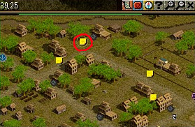
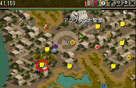
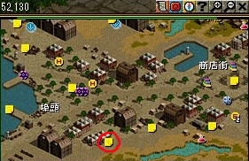
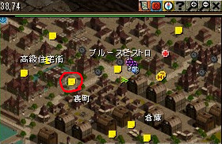
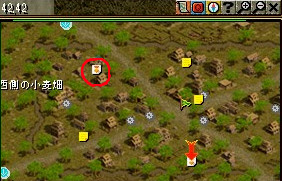

| Lv | クエスト名 | 受諾可能Lv | 称号効果 | 開始NPC | NPC座標 | 備考 |
|---|---|---|---|---|---|---|
| シティーウォーカー１ | 配達の騎士 | 1 | 街中での移動速度 5％増加 |
ソーン | 大きな町バリアート （39,25） |
|
| シティーウォーカー２ | 私の頼みを聞いて！ | 4 | 街中での移動速度 10％増加 |
ブレン | 神聖都市アウグスタ （40,154） |
|
| シティーウォーカー３ | ウィルモアさんは 忙しいんだ！ |
9 | 街中での移動速度 15％増加 |
ウィルモア | 港町ブリッジヘッド （52,130） |
|
| シティーウォーカー４ | 若旦那を 探してください！ |
16 | 街中での移動速度 20％増加 |
乳母ヘレン | 港町シュトラセラト （37,75） |
|
| シティーウォーカー５ | 犯人を捜せ！ | 25 | 街中での移動速度 25％増加 |
ハント | 農村ラカリフサ （42,42） |
| NPC | クエ内容 | MAP/座標 | 備考 |
|---|---|---|---|
| ソーン | 大きな町バリアート （39,25） |
古都冒険家協会へ。 ロビーあたりを記憶１推奨。 称号担当官（古都冒険家協会・クエスト案内にいる） ９１１ で直通。 ソーンの前を記憶２推奨。 左上方面。  シティウォーカークエは、 １〜５のいずれもＮＰＣと話す時に守らなければいけないルールがある。 しかも １と２〜５はルールが逆になる。要注意。 ◆ＮＰＣと話す時のルール（シティウォーカー１） スフィアは破壊してから話す事。各種カーペット、帰還巻物も同様。 カーペットは乗ったままで話しかけてもＯＫ。 移動アイテムがインベにある状態でNPCに話しかけると、 途中のどのNPCに話しかけてもクエ取り消しになる。 |
|
| ナーン | 手紙を持って行く | 大きな町バリアート （78,136） |
スフィアを破壊して話す事。 |
| ソーン | 大きな町バリアート （39,25） |
スフィアを破壊して話す事。 | |
| エルラズ | 手紙を持って行く | 魔法都市スマグ （75,16） |
記憶１を使って冒険者協会へ戻る。 一般クエスト担当（古都冒険家協会・クエスト案内にいる） １２４１１（神秘な力の宝石） これが使えない場合は 協会テレポーター １３１（キャラLvによっては４万G必要） で。 エルラズに話す時はスフィアを破壊してから話す事。 |
| ソーン | 大きな町バリアート （39,25） |
記憶２を使って。 スフィアを破壊して話す事。 |
| NPC | クエ内容 | MAP/座標 | 備考 |
|---|---|---|---|
| ブレン | 神聖都市アウグスタ （40,154） |
シティーウォーカー１から続きの人は記憶１を使って。 そうでない人は古都冒険家協会へ。 ロビーあたりを記憶１推奨。 称号担当官（古都冒険家協会・クエスト案内にいる） ９１１ で直通。 左下方面  ◆ＮＰＣと話す時のルール（シティウォーカー２〜５） スフィアは破壊しなくてＯＫ。各種カーペット、帰還巻物も同様。 カーペットから降りて話す事。 カーペットから降りずに話してもクエが進まない。 特に最後のNPCでこれをやるとクエ取り消しになる。要注意。 |
|
| ヘングリッタ修道女 | ブレンからの感謝の言葉を 代わりに伝える |
神聖都市アウグスタ （4,41） |
|
| アウグスタ大聖堂の井戸から 冷たい水を汲む |
神聖都市アウグスタ （69,46） |
アウグスタ大聖堂の柵の内側、左上にある井戸をクリック。 | |
| ブレンの祖父の墓に行き、 壊れた所がないか確認する |
神聖都市アウグスタ （92,11） |
そのまま上の共同墓地へ行き、墓をクリック。 | |
| 欲張りティロン | ブレンの話を伝える | 神聖都市アウグスタ （166,46） |
|
| ブレン | 神聖都市アウグスタ （40,154） |
必ずカーペットから降りて話す事。 乗ったまま話しかけるとクエ取り消しになるので注意。 |
| NPC | クエ内容 | MAP/座標 | 備考 |
|---|---|---|---|
| ウィルモア | 港町ブリッジヘッド （52,130） |
シティーウォーカー２から続きの人は記憶１を使って。 そうでない人は古都冒険家協会へ。 ロビーあたりを記憶１推奨。 称号担当官（古都冒険家協会・クエスト案内にいる） ９１１ で直通。 中央下方面。  ◆ＮＰＣと話す時のルール（シティウォーカー２〜５） スフィアは破壊しなくてＯＫ。各種カーペット、帰還巻物も同様。 カーペットから降りて話す事。 カーペットから降りずに話してもクエが進まない。 特に最後のNPCでこれをやるとクエ取り消しになる。要注意。 |
|
| 独眼のオルガ | 注文した品がちゃんと届いたか 確認する |
港町ブリッジヘッド （26,100） |
|
| 自分の目で品を確認する | 港町ブリッジヘッド （19,106） |
すぐ左下にある箱をクリック。 | |
| 倉庫番ネビル | ウィルモアの倉庫の空きを 確認する |
港町ブリッジヘッド （26,30） |
|
| ヘイデン | ウィルモアが頼んだ書類の 包みを受け取る |
港町ブリッジヘッド （121,39） |
|
| ウィルモア | 港町ブリッジヘッド （52,130） |
必ずカーペットから降りて話す事。 乗ったまま話しかけるとクエ取り消しになるので注意。 |
| NPC | クエ内容 | MAP/座標 | 備考 |
|---|---|---|---|
| 乳母ヘレン | 港町シュトラセラト （37,75） |
シティーウォーカー１から続きの人は記憶１を使って。 そうでない人は古都冒険家協会へ。 ロビーあたりを記憶１推奨。 称号担当官（古都冒険家協会・クエスト案内にいる） ９１１ で直通。 中央下方面。  ◆ＮＰＣと話す時のルール（シティウォーカー２〜５） スフィアは破壊しなくてＯＫ。各種カーペット、帰還巻物も同様。 カーペットから降りて話す事。 カーペットから降りずに話してもクエが進まない。 特に最後のNPCでこれをやるとクエ取り消しになる。要注意。 |
|
| モリソン | ジンを探しに行く | 港町シュトラセラト （65,99） |
|
| 泣き虫ジン | ジンを探しに行く | 港町シュトラセラト （156,32） |
高級ホテル・オクトパスの周辺にいる。 |
| 怪しいおじさん | ジンがなくしたペンダントを 探して取り返す |
港町シュトラセラト （86,104） |
倉庫の「庫」の右上あたり。 |
| 泣き虫ジン | 港町シュトラセラト （156,32） |
||
| 乳母ヘレン | 港町シュトラセラト （37,75） |
必ずカーペットから降りて話す事。 乗ったまま話しかけるとクエ取り消しになるので注意。 |
| NPC | クエ内容 | MAP/座標 | 備考 |
|---|---|---|---|
| ハント | 農村ラカリフサ （42,42） |
シティーウォーカー１から続きの人は記憶１を使って。 そうでない人は古都冒険家協会へ。 ロビーあたりを記憶１推奨。 称号担当官（古都冒険家協会・クエスト案内にいる） ９１１ で直通。 左上方面。  ◆ＮＰＣと話す時のルール（シティウォーカー２〜５） スフィアは破壊しなくてＯＫ。各種カーペット、帰還巻物も同様。 カーペットから降りて話す事。 カーペットから降りずに話してもクエが進まない。 特に最後のNPCでこれをやるとクエ取り消しになる。要注意。 |
|
| コルボー | 犯人を目撃したというコルボーに 話を聞く |
農村ラカリフサ （82,124） |
ここでの会話の進め方によって このクエのエンディングが変わる。 ・１１２２２１１１ の場合 → 真実にたどり着く（EXP６０００獲得） ・全て１ の場合 → 真実にたどり着かない（EXPなし） どちらを選んでもクエはUPされ、称号は獲得出来る。 お好きな方で。 |
| 犯人の手掛りを捜す | 農村ラカリフサ （11,53） |
ミニマップ中「西側の小麦畑」の、「の」の付近の積みわらをクリック。 | |
| ハント | 農村ラカリフサ （42,42） |
||
| ホーバン | 容疑者のホーバンに話を聞く | 農村ラカリフサ （27,108） |
|
| ハント | 農村ラカリフサ （42,42） |
必ずカーペットから降りて話す事。 乗ったまま話しかけるとクエ取り消しになるので注意。 |